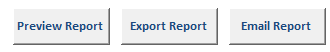
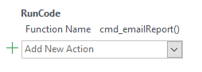

Introduction
Microsoft offers built in VBA methods to crete instances of other office Applications. Using these methods, it is possible to communicate between a MS Access front end database and another MS Office application (e.g. Outlook, Word, Excel).
The "Email Report" button in the writeup form uses these built in methods to pass information from MS Access to MS Outlook.
The "Email Report" button uses a macro as its "On Click" event that calls cmd_emailReport
Prerequisites
To use the Add PARR button, some initial configuration in MS Outlook is required:
- cvmbs-mip_clinical_hematopathology@Mail.colostate.edu is added as an account to MS Outlook.
- For information on setting up the CH lab email on your computer, please see CH lab email setup
- The CH lab email must be set as the default email and the default Data File in MS Outlook's Account Settings for database functionality to properly work.
- The Add PARR button assumes a folder called "Tasks" exists in the default account. If the above settings are not correctly configured, the PARR task will either be added to your personal account, or Access will throw an error because the expected path does not exist.
Email Module
Modules/Email/
All of the code used to email a report is contained in the "Email" Module. These methods are described in detail below.
cmd_emailReport()
This function calls the other methods in the Email module to generate an email with a pre-formatted subject and message to all addresses in the Sample Submission and Veterinarian records.
The following describes the order of events:
- Set the Writeup form as the form from which data will be pulled.
- Set the report query using setReportID(frm).
- Set which report will be sent (stDocName)
- Set the text fields for the email.
- To: fun_gatherEmails(frm)
- Subject: fun_subjectLineReport(frm)
- Body: txt_Msg = fun_reportMessage(frm)
- Rename the pdf using fun_getPdfName(frm)
- Use the built-in command SendObject to create an email preview of the report.
- Save the pdf to the T drive using Open_And_Save_PDF_quiet (located in Modules/General)
If the user cancels the email, the Error_Handler and Error_Handler_Exit are triggered. Because the report opened as part of the renaming process, not opening the report preview when the user cancels can result in improper data being associated with a report. These methods ensure that no matter what, the report is still opened in preview mode.
' Email the report and export the pdf to the T drive
Function cmd_emailReport()
On Error GoTo Error_Handler
'Email variables
Dim txt_To As String
Dim txt_Subject As String
Dim txt_Msg As String
'Set control form
Dim frm As Form
Set frm = Forms("Add write up and fax date to case")
fun_setForm = frm
'Input variables
Call setReportID(frm) 'Set the report query condition
Dim stDocName As String
stDocName = "2022 Report"
'Set text fields for the email
txt_To = fun_gatherEmails(frm)
txt_Subject = fun_subjectLineReport(frm)
txt_Msg = fun_reportMessage(frm)
'Rename pdf
Dim sAttachmentName As String
sAttachmentName = fun_getPdfName(frm)
DoCmd.OpenReport stDocName, acViewPreview, , , acHidden
Reports(stDocName).Caption = sAttachmentName
'Open the email preview
DoCmd.SendObject acSendReport, stDocName, acFormatPDF, Nz(txt_To, ""), , , Nz(txt_Subject, ""), Nz(txt_Msg, "")
'Save pdf to drive
Open_And_Save_PDF_quiet stDocName, ""
Error_Handler_Exit:
On Error Resume Next
DoCmd.OpenReport stDocName, acViewPreview, , , acHidden
Exit Function
Error_Handler:
If Err.Number <> 2501 Then 'The user cancelled the email
MsgBox Err.Number & vbCrLf & Err.Description
End If
Resume Error_Handler_Exit
End Function
setReportID(frm As Form)
Sets TempVars used in report generation and file creation. For more information about report creation, see the Report documentation.
' Set parameters needed for report generation
Function setReportID(frm As Form)
TempVars.ADD "reportID", frm.Avery_Lab_Number.Value 'Used by the query for the report
TempVars.ADD "refNum", frm.Reference_lab_number.Value 'Used in the file name
TempVars.ADD "reportSpecies", frm.Species.Value 'Used to set the species for the subform in the report
TempVars.ADD "reportSampleType", frm.[Sample type].Value ' Used to set the sample type for the subform in the report
End Function
fun_gatherEmails(frm As Form) As String
Gather all emails from the Sample Submission table and the Veterinarian table for the associated record. Accepts a form (the writeup form) as input. Returns a list of emails as a string. Since emails could be duplicated between the Veterinarian and Sample tables, all duplicate emails are first removed using uniqueArr().
'This function gathers the emails from the submittting clinic and the doctors
Private Function fun_gatherEmails(frm As Form) As String
Dim numDoc, numClinic As Variant
Dim emailsDoctor, emailsClinic
Dim doctorArray, clinicArray
Dim uniqueEmails, allEmails
numDoc = Nz(frm.[emailsDoctor], 0)
numClinic = frm.[emailsClinic]
emailsDoctor = Nz(DLookup("[Email address]", _
"Veterinarians", "[Vet Number] =" & numDoc), "")
emailsClinic = Nz(DLookup("[email]", _
"Clinics", "[ID] =" & numClinic), "")
doctorArray = Split(emailsDoctor, ";")
clinicArray = Split(emailsClinic, ";")
uniqueEmails = uniqueArr(doctorArray, clinicArray)
allEmails = Join(uniqueEmails, ";")
fun_gatherEmails = allEmails
End Function
uniqueArr(ParamArray myArr() As Variant) As Variant()
This function accepts two arrays as input and returns a dictionary of the unique elements.
'This function gets rid of any duplicate email addresses
Private Function uniqueArr(ParamArray myArr() As Variant) As Variant()
Dim dict As Object
Dim V As Variant, W As Variant, Z As Variant
Dim I As Long
Set dict = CreateObject("Scripting.Dictionary")
For Each V In myArr 'loop through each myArr
For Each W In V 'loop through the contents of each myArr
Z = Trim(W) 'trim whitespace
If Not dict.exists(Z) Then dict.ADD Z, Z
Next W
Next V
uniqueArr = dict.keys
End Function
fun_subjectLineReport(frm As Form) As String
This function generates a pre-formatted subject line for the email using information gathered from the Writeup Form.
Format:
Emailing Test Results: [PDF_NAME] "[PATIENT_NAME]" [LAST_NAME]
'This function creates a subject line for the report
Private Function fun_subjectLineReport(frm As Form) As String
fun_subjectLineReport = "Emailing Test Results: " & fun_getPdfName(frm) & _
" """ & frm.[Patient name] & """ " & frm.[Owner's last name]
End Function
fun_reportMessage(frm As Form) As String
This function returns a pre-formatted email body using information gathered from the Writeup Form. The signature is set using fun_emailSig().
Format:
Please see the attached test results for "[PATIENT_NAME]" [LAST_NAME].
Thank you,
[SIGNATURE]
'This function creates a message with the chlab signature for reporting
Private Function fun_reportMessage(frm As Form) As String
fun_reportMessage = "Please see the attached test results for """ & _
frm.[Patient name] & """ " & frm.[Owner's last name] & "." & _
vbNewLine & _
vbNewLine & "Thank you," & _
fun_emailSig()
End Function
fun_emailSig() As String
This function returns a pre-formatted signature for use in emails.
Format:
Clinical Hematopathology
Colorado State University
Department of Microbiology, Immunology, and Pathology
College of Veterinary Medicine and Biomedical Sciences
Email: ch-lab@colostate.edu
Phone: 970-491-1170
Fax: 970-491-4242
chlab.colostate.edu
'This function creates the default chlab signature
Private Function fun_emailSig() As String
fun_emailSig = vbNewLine & "Clinical Hematopathology" & _
vbNewLine & "Colorado State University" & _
vbNewLine & "Department of Microbiology, Immunology and Pathology" & _
vbNewLine & "College of Veterinary Medicine and Biomedical Sciences" & _
vbNewLine & "Email: ch-lab@colostate.edu" & _
vbNewLine & "Phone: 970-491-1170" & _
vbNewLine & "Fax: 970-491-4242" & _
vbNewLine & "chlab.colostate.edu"
End Function
fun_getPdfName(frm As Form) As String
This function returns the file name that will be used for the output pdf. Information for the name is gathered from the Writeup form.
- If there is a reference lab number, the format is: [DLab_Num] [Ref_Num]
- If there is no reference lab number, the format is: [DLab_Num]
'This function creates the name of the pdf (Dlab number + Reference number)
Private Function fun_getPdfName(frm As Form) As String
Dim strPrint As String
Dim numRef, numDLab
numRef = frm.[Reference lab number]
numDLab = frm.[D-LAB Sample Number]
'Check if there's a reference number
If Len(numRef & "") = 0 Then
strPrint = numDLab
Else
strPrint = numDLab & " " & numRef
End If
fun_getPdfName = strPrint
End Function